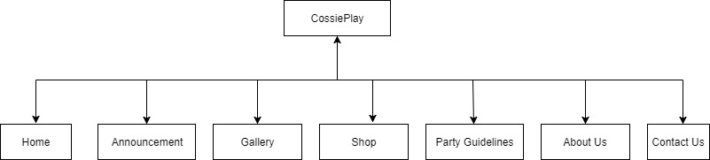

Name: Rajendra Manandhar
Login: JC476763
The main goal is the marketing of the cossieplay through website so that more people would come to the parties and get costumes made. It also advertises about the upcomming events of the family run CossiePlay business in order to get more people. The website also aims to sell second hand cosplay dresses for reasonable price.
We need to dive into the data and analytics to truly know how successful the website is and the website is achieving it's target. So, we need to keep track of the following metrics:
1) The total number of visitors during a certain period of time.
2) The percentage of visits that go to only one page before exiting a site.
3) Number of Registration to go to Cossie Play Party through emails during a month.
4) The number of emails received from audience regarding CossiePlay events and different cosplay dresses.
This website aims to target to a younger audience below 35 years old, most preferably high school kids and young adults for involving in cosplaying.
 Site Flowchart